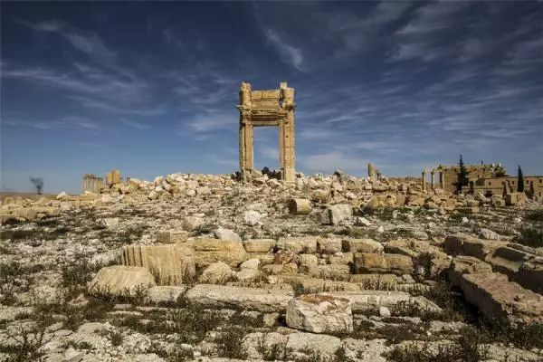

收录于合集
马克思会如何看待当今世界？
据参考消息报道，德国《商报》4月13日发表文章《马克思今天会怎么想？》（作者 克里斯蒂安·里肯斯），内容如下：
《资本论》在150年前问世，到了今天，许多东西已经发生改变。这足以令我们发问：马克思会如何看待当今的世界？
“伊斯兰国”组织——趋利的雇佣兵团伙
卡尔·马克思最为人熟知的一句名言并非出自他本人，实际上最早是列宁掷地有声地说出了：“宗教是人民的鸦片”这句话。虽然马克思也对宗教和鸦片问题有所思考，但他援引的大概是海因里希·海涅的相关表述。
不管这句话出自谁，它是否有助于我们理解所谓的“伊斯兰国”组织甚或一般意义上的宗教狂热呢？对马克思而言，宗教是遮盖真实实力对比的上层建筑的一部分。他认为，这一对比关系仅通过对生产资料的占有得以体现。
马克思指出，宗教和鸦片一样，令人麻痹并阻碍他们认清现实。实际上，“伊斯兰国”组织在他们的核心区域叙利亚和伊拉克依照的并非宗教团体法则，而更多的是一种趋利的雇佣兵团伙法则：榨取被占领地区，比如通过收取保护费，藏匿艺术珍宝或绑架妇女。
宗教上层建筑帮助其吸引狂热的新成员。基于宗教的严厉规定和惩罚措施为统治被占领地区提供保证。因此，“伊斯兰国”组织至少是一个既唯物又有宗教内涵的组织。

叙利亚贝尔庙，如今只剩下一个石拱门
不过，这无法解释“伊斯兰国”组织核心区域以外的恐怖主义。但或许可以使用马克思主义的另一种思想：生产关系造就集体认同，比如人们都是牧民、农民或工人，一旦生产关系发生改变，这种传统关系也会被打破，人们就会去寻找新认同。
时事评论员、《资本论》诞生150周年纪念选集编纂者马蒂亚斯·格雷弗拉特通过这种“社会黏合剂”的丧失来解释当今民粹主义和民族主义运动的高涨。“伊斯兰国”组织的袭击者——大多是年轻男子——最终寻求的也是一种极端形式的归属感以及超越死亡的自我证明。
**
**
“素食日”——也会成为有力武器
马克思擅长语言讽刺，他最喜讽刺不向资本主义宣战、而是寄望于逐步将其驯化的怯懦改革者。难以想象马克思会用怎样的长篇大论抨击2013年联邦会议选举中号召“素食日”的绿党政治家。这些政治家要求食堂和其他商业厨房每周有一天只提供素食，以减少肉类消费带来的严重生态后果。
“素食日”实际上代表着缓和资本主义一个基本矛盾的尝试：资本主义的运转依赖持续的经济增长，而至少迄今为止，经济增长始终导致资源消耗增加，但地球上的资源是有限的。因此，在所有重要资源被用尽之时，资本主义也将寿终正寝。
在《资本论》的三卷中一再出现对资本主义生态维度的评论，马克思写道：“生产和消费的排泄物”。那时他当然还无法认识到全球环境污染和资源消耗的规模。
如果马克思活到今天，他很可能会参与到这场辩论中，即经济增长是否也能带来资源消耗的减少——例如通过自愿放弃尤其是污染环境的消费形式，比如无节制的肉类消费。
加入跨越150多年的时空穿梭没有令马克思的思维反应变迟钝，他可能会站在怀疑者一边。马克思大概会指出，在资本主义中，虽然经济增速每提高一个百分点所额外消耗的资源不断减少，但消耗永远不会降至零，更不用说出现原本需要的资源消耗的绝对减少。
马克思今天很可能会论证说，即便出于生态原因，克服资本主义和与之相连的被迫持续增长也是唯一途径。不过，这样看来，如今左派圈子讨论的大规模拒绝消费是令资本主义崩塌的一条极为有效的途径。因为几乎没有什么能比缺乏需求更快动摇这一制度了。
我们应意识到：只要抱有正确的革命态度，即便是“素食日”也会成为武器。
“尾气门”事件——尾气检测中的国家垄断资本主义
德国联邦议会“尾气门”调查委员会主席赫伯特·贝伦斯在被媒体问及汽车工业和国家之间的利益纠缠是否让他联想到了国家垄断资本主义时，不假思索就给出了回答。“是的，绝对如此，”这位左翼党联邦议会议员说，“人们绝对应该这么看。”要知道，贝伦斯在1989年以前是德国共产党党员。在阐述马克思列宁主义理论方面，他应该是足够权威的。
马克思主义理论的核心要素包括各行业向少数几个企业的集中。苏联革命领导人列宁继续发展了这一命题：到资本主义末期，余下的企业集团因规模庞大而极具权势，国家机构也将沦为其仆人。
确实引人注目的是，有关大众汽车柴油发动机作弊装置的传闻最初出现时，德国政府在很长一段时间里充耳不闻。与本土汽车制造商未受牵连的美国相比，德国随后对此事的调查澄清过程也极其缓慢。
如今人们不一定会立即将此称作国家垄断资本主义。但如果是马克思，他肯定会这样做。 **
**
基本收入——要看是否够多
马克思会如何看待无条件基本收入？这是一个甚至可能在马克思主义者中引发激烈争论的问题。他们中的一些人认为，统一的月工资是共产主义乌托邦社会合乎逻辑的结果。其核心是将人从强制的有报酬工作中解放出来。
按照马克思的说法，他获得自由后，可以“上午打猎，下午捕鱼，傍晚从事畜牧，晚饭后从事批判。这样就不会使我老是一个猎人、渔夫、牧人或批判者。”如果工作是依据兴趣原则而不是迫于赚钱压力，那就必须根据其他标准而不是自身的劳动生产力来分配金钱。那为什么不采取基本收入的形式呢？
科隆的贫困问题研究者克里斯托夫·布特韦格等左派基本收入批评者说，在不改变所有制关系的情况下，实行基本收入只会降低而非提高社会公平。毕竟基本收入取代的是通常甚至更高的传统社会福利。这场辩论表明，最终存在两种基本收入理念。一种是自由理念，保障略高于满足基本生活条件的收入可是社会福利国家更为有效：不再施压企业保留不赚钱的工作岗位。
对这种由汉堡经济学教授托马斯·施特劳布哈尔呼吁实行的自由的基本收入，马克思大概只会嗤之以鼻。他可能会抨击其为“大资本家扔给无产阶级的廉价施舍，以使自己彻底摆脱所有社会联系，从而更加无拘无束地沉溺于利润最大化。”或者给出类似评价。
相反，马克思主义基本收入只可能在剥夺资本家生产资料的支配权的情况下才会产生。唯有如此，才能根据个人所需分配全部生产收入——如果到时还有可用来分配的收入的话。

来源：高层内参
筛选：米雪
编辑：维君
您可能还会喜欢：